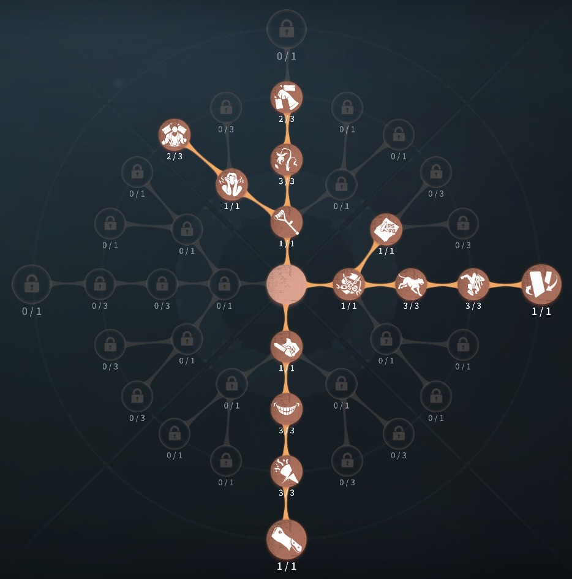
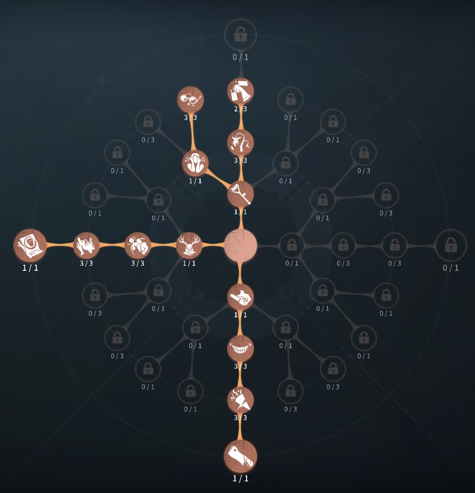

蝋人形師（フィリップ）の評価
固めてサバイバーも暗号機もスタン！
外在特質とスキル
特質1:ワックスコート
・板当てやアイテムなどによって操作不可能状態を受けると付近5m以内に蝋を25％まき散らしサバイバーや板窓、暗号機ゲートに付着する。気絶状態の回復速度10％上昇。蝋で封鎖された板窓を操作できる。存在感0：打設
・前方へ向かって蝋を発射することができる。蝋はサバイバーやオブジェクトに命中すると付着する。・付着:
蝋が20/50/80％付着したサバイバーの板窓操作が5/10/20%低下し、移動速度が2/4/6%低下する。
蝋が100％に達したときサバイバーは蝋で固まり、3秒間行動不能になる。12秒蝋の増加がなかった場合毎秒15％蝋が減少する。
蝋が50付与した板窓、暗号機、ゲートは封鎖状態となり、15秒間操作できなくなる。
存在感1：硬化
・蝋の塊を投げることができる。着弾地点から4.2m以内のサバイバーに25％の蝋が付着し、板窓を即座に封鎖する。着弾後、一定時間蝋が残りサバイバーが触れると25％の蝋が付着する。存在感2：熔蝋
・熔蝋発動時、硬化のクールタイムがリセットされる。・蝋を25秒間熱蝋に変化させ、熔蝋中は蝋がオブジェクトに付着しなくなる。
・熱蝋で100％に達すると1ダメージを食らう。1ダメージ後、3秒間は蝋が命中しても進度は増加しない。熔蝋を使用していた時間に比例して熔蝋終了後、硬化のクールタイムが減少する。
ハンターの立ち回り方
1. 初動の立ち回り
蝋人形師は徒歩ハンターであり、試合開始直後の索敵と接近が重要になる。スポーンの位置を把握し、サバイバーがいる方へ向かおう。
・索敵と初撃の狙い方:
✅
視界が悪い状態で蝋を撃っても避けられるだけなので、まずはサバイバーの位置を確認。小屋の窓枠などの強ポジションに先回りして蝋を打設し、動きを制限しながら接近する。近づける場合は通常攻撃を狙い、離れているなら蝋でゲージを溜めつつ圧をかける。
・初撃の流れ:
✅サバイバーに蝋を付着させ、ゲージを100％直前まで溜める。通常攻撃を当て、硬直させてから再度攻撃してダウンを狙う。窓枠や板を事前に封鎖し、サバイバーの逃げ場をなくす。
2. スキルの使い方
蝋人形師のスキルは、蝋の管理とエイム力が鍵となる。
・蝋の基本仕様:
・蝋ゲージ：サバイバーに蝋を付着させることで蓄積し、100%になると一定時間硬直する。
・熔蝋（熱蝋）：存在感2で解放される。蝋の付着進度を灼熱進度に変換し、ダメージを与えられる。
・硬化：蝋を一定範囲にまき、接触したサバイバーに蝋ゲージを増加させる。
・打設：指定位置に蝋を設置し、サバイバーの進行を妨害する。
・効率的な蝋の使い方:
・蝋を付着させる順序が重要。
先に通常の蝋を50％ほど付着させ、その後熱蝋を当てることで効率よくダメージを与えられる。最初から熱蝋を当てると100%まで溜まらず、無駄になりやすい。
・蝋の硬化で板・窓を封鎖
板や窓枠に硬化を使用し、サバイバーの行動を制限。
先倒しされた板の前に硬化を設置し、迂回を強制させる。
・打設を利用した誘導
板や窓枠の進行方向に打設を置き、動きを制限。
事前に蝋を広範囲に撒いておくことで、サバイバーの選択肢を狭める。
3. チェイス中の立ち回り
蝋人形師のチェイスは、蝋の狙撃精度と板・窓の制圧力にかかっている。
・立ち回りのポイント:
蝋を当て続けることが最優先。蝋ゲージは10秒間付着しないと急速に減少するため、連続して当てる必要がある。サバイバーが逃げる方向を予測し、着弾地点を意識して撃つ。
・硬化でルートを制限:
サバイバーが逃げる先に硬化を設置し、進行ルートを限定。
これにより、回り込む時間を稼ぎながら接近できる。
・通常攻撃と蝋の組み合わせ:
まず蝋を75%以上溜め、通常攻撃で硬直させてから再度蝋を付着。熔蝋（熱蝋）を活用し、短時間で2ダメージを狙う。
4. 救助狩りの立ち回り
蝋人形師は熔蝋が解禁されるまでは救助狩りが苦手な部類に入るが、存在感が最大になれば強力な妨害が可能。
・存在感MAX前の救助狩り:
・通常攻撃での妨害を優先。
無理に蝋でゲージを溜めようとすると、救助を許しやすい。中距離から蝋を当て、80％以上溜まった状態で通常攻撃を狙う。
・硬化で接近経路を封鎖
救助に向かうルートに硬化を設置し、時間を稼ぐ。板・窓を使わせないように配置することで、救助の遅延が可能。
・存在感MAX後の救助狩り:
・熔蝋（熱蝋）で即座にダメージを狙う
救助役に蝋ゲージ100％まで付着→チェア前に硬化→熔蝋に切り替え1ダメージ→通常攻撃。熔蝋を用いることで救助狩りができる。
・巡視者との組み合わせも有効:
巡視者を噛ませて硬直させながら蝋ゲージを80％まで溜め、追撃。板窓封鎖と組み合わせることで救助成功後の行動も制限できる。
5. 注意点
蝋人形師を使う際には、以下の点に注意しましょう。
🔹 エイム精度が求められる
→
サバイバーを正確に狙い続けないと、蝋の効果が発揮できない。遠距離射撃の精度を高めるため、トレーニングモードで練習推奨。
🔹 スマホ版はキー配置の調整が必要
→
右方向へのエイムが難しいため、雪玉ボタンと打設ボタンの位置変更を検討。ただし、中央寄りになることでダウンしたサバイバーの拾いミスが増える可能性あり。
🔹 通電後の立ち回りが課題
→
ゲート前での追撃は苦手なため、瞬間移動での暗号機防衛を重視。事前にゲートを蝋で封鎖し、反対側に瞬間移動するなど工夫が必要。
おすすめの内在人格
裏向きカード型人格
この内在人格は、板割りでチェイスを高め、怒りで粘着を対処した人格

傲慢型人格
この内在人格は、板割りでチェイスを強化し、狂暴で救助後すぐに蝋を付与させる人格


みんなのコメント